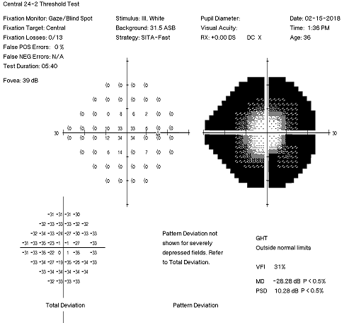
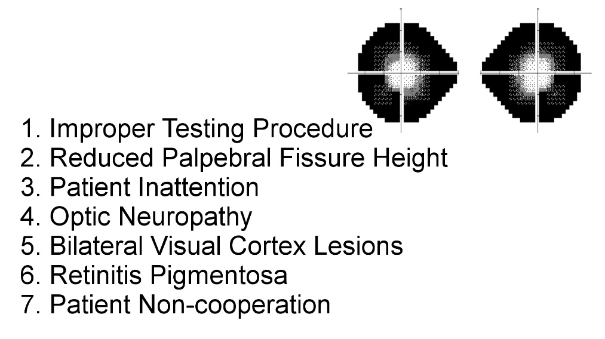
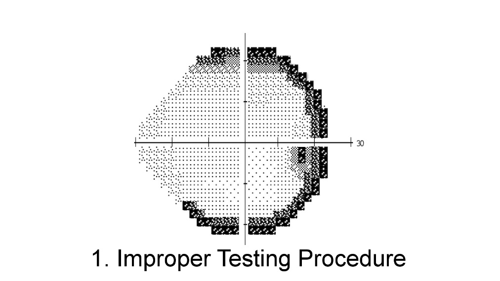
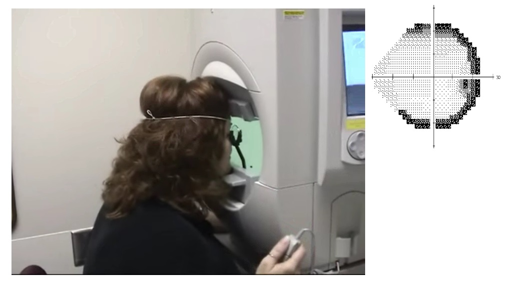
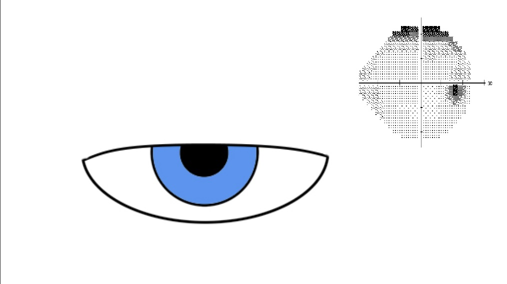
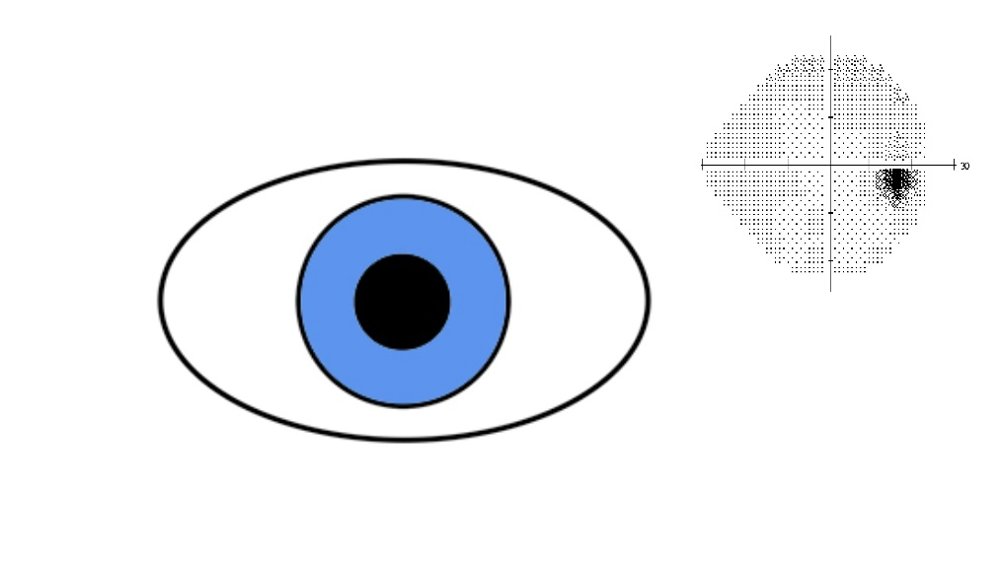

☰
Visual Field Examination
Dealing With The Constricted Visual Field

Video overview
What is it?
Visual field that does not expand to its normal boundaries
What should you do?

Recognize the seven variants of this phenomenon


Improper testing procedure
Defects consist of high thresholds around the edge of the visual field
Usually due to an erroneous refractive correction, improper placement of the lens correction, or remote positioning of the patient’s head
Redo the visual fields, correct any technical errors, clarify instructions to the patient, and encourage alertness to stimuli
If the visual field remains constricted after these efforts, test by confrontation or kinetic perimetry


Reduced palpebral fissure height
Defects consist of high thresholds around the edge of the visual field
Due to ptosis, dermatochalasis, blepharospasm, or blepharophimosis
Repeat the visual field test with the upper lid taped up
Patient inattention
Generalized field constriction
Usually generated by dementia, sleepiness, attention deficit disorder, other encephalopathy
In dementia, inattention is probably based on poor disengagement of fixation
Extensive optic neuropathy
Defects display steps across the nasal horizontal meridian (nasal steps)
Most common in glaucoma, ischemic optic neuropathy, post papilledema optic neuropathy, and optic neuritis
Bilateral visual cortex lesions
Defects are congruous with steps across the nasal vertical meridian with macular sparing ("keyhole fields")
MRI usually reveals obvious lesions, typically effects of infarction
Retinal dystrophy
Defects appear as incomplete rings usually centered between 20 and 40 degrees eccentric to fixation
Full extent of the defects may not appear unless perimetry assesses the visual field beyond 30 degrees
No step-offs along the horizontal or vertical meridians
Ophthalmoscopy often shows retinal pigmentary abnormalities
Electroretinography shows the characteristic abnormalities of outer retinal degeneration
Deliberate non-cooperation by the patient
Any constriction pattern may appear
Clover leaf pattern is common
Progressive narrowing of the visual field occurs as kinetic perimetry proceeds ("spiraling")
On confrontation testing, the visual fields do not expand as the testing distance increases (“tunnel field”)
Trap:
before you blame deliberate non-cooperation, exclude procedural and organic causes!
Visual Field Examination
Videos
Performing The Tests
Interpreting The Test Results
Localizing The Lesion
Dealing With The Constricted Visual Field